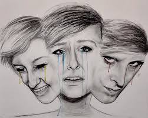

Mengenai Alter Ego
Pengertian
Alter ego (bahasa Latin yang berarti "aku yang lain")adalah diri kedua yang dipercaya berbeda daripada orang kebanyakan atau kepribadian yang sebenarnya. Istilah ini dipakai pada awal abad kesembilan belas ketika gangguan pemecahan kepribadian pertama kali dijelaskan oleh psikolog. Seseorang yang memiliki Alter ego dikatakan menjalani kehidupan ganda.
Faktor Penyebab
Berikut beberapa faktor penyebab dari munculnya alter ego pada diri seseorang, yaitu;
- Trauma dikarenakan masa lalunya yang suram.
- Memiliki tujuan tertentu dalam hidupnya.
- Sering merasakan kesepian.
- Jarang mendapat perhatian dari lingkungan sekitar, sehingga seseorang tersebut memhkan lawan bicara.
- Adanya suatu sifat yang tidak dimiliki oleh si penderita. Misalnya, si penderita sangat penakut, sehingga dapat memicu alter ego yang bersifat pemberani.
Ciri-Ciri
Ada beberapa ciri umum yang menunjukan seseorang mengidap alter ego, yakni;
- Sering berubah-ubah perilakunya. Dikarenakan biasanya alter ego memiliki sifat yang bertolak belakang dengan penderita.
- Hampir seperti bipolar disorder, kondisi emosi cenderung tidak stabil. Terkadang senang, namun selang beberapa menit kemudian akan merasa sedih, dan sebaliknya.
- Terkadang merasa kehilangan waktu. Pada beberapa kasus umum, penderita yang mengalami pertukaran dengan alter ego, tidak ingat apa saja yang telah dilakukan oleh alter egonya.
- Mempunyai sifat panik.
- Umummnya, penderita tidak menyadari jika dirinya memiliki alter ego, dikarenakan ia tidak mengingat apapun yang dilakukan alter egonya.